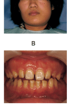
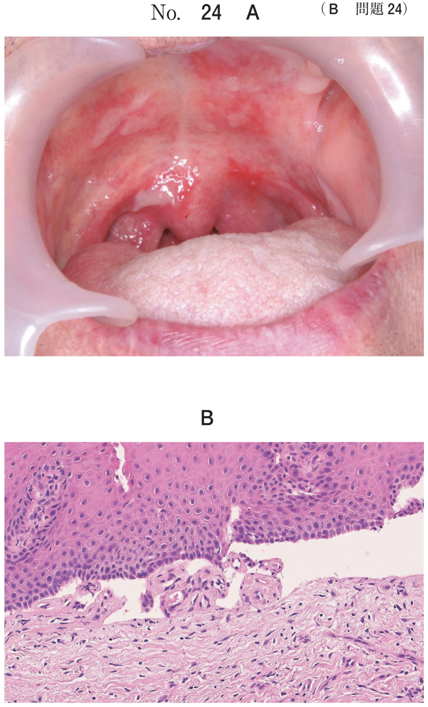
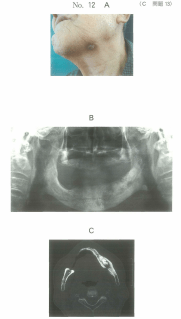
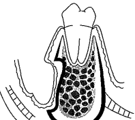
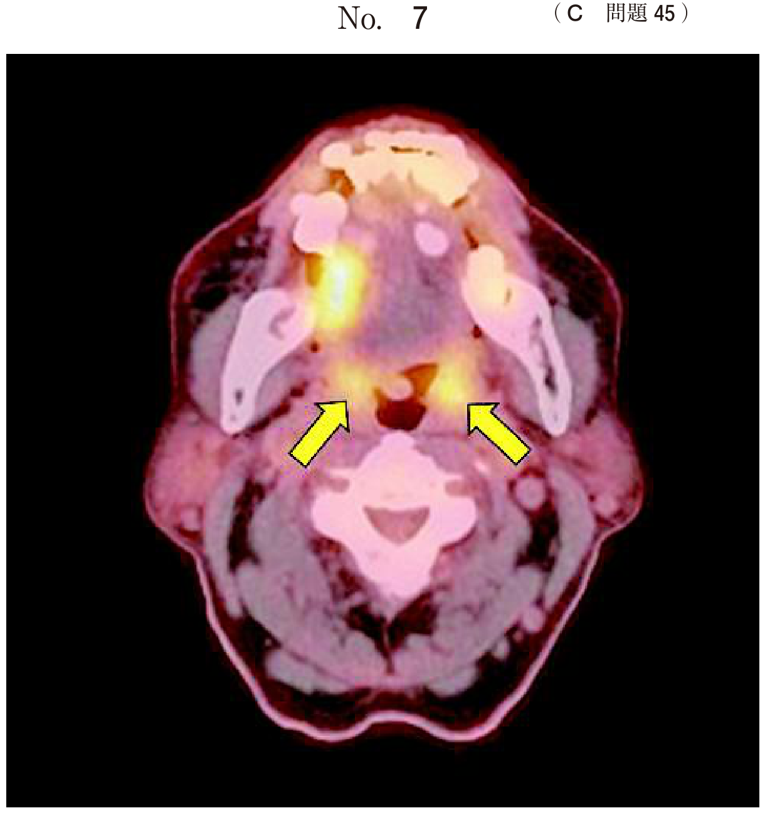
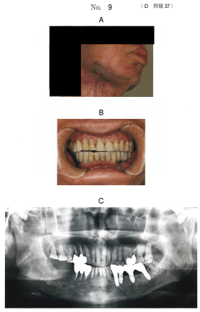

顎骨の炎症
顎骨炎の分類
顎骨炎は病変の主体がどこにあるかにより、以下の3つに分類される。
| 分類 | 病変の主体 | 特徴 |
|---|---|---|
| 骨膜炎 | 骨膜 | 根尖部の炎症が皮質骨を穿孔して骨膜に達する。骨膜と皮質骨の間に膿が貯留 |
| 骨炎（歯槽骨炎） | 歯槽骨 | 歯槽骨部を中心とした炎症。急性型と慢性型がある |
| 骨髄炎 | 骨髄 | 最も重篤。成人では主に下顎に好発。急性型と慢性型がある |
鑑別困難な例も多く、同一症例で骨膜炎→骨髄炎と進展することがある。
骨膜炎
急性顎骨骨膜炎
- 根尖部の炎症が骨髄内に進展→皮質骨を穿孔→骨膜と皮質骨の間に膿瘍形成（骨膜下膿瘍）
- 下顎の智歯周囲炎や抜歯後感染に続発することが多い
- 罹患部のびまん性腫脹、熱感、圧痛を認める
- 骨膜下膿瘍の段階では強い自発痛（拍動痛）。粘膜下膿瘍に移行すると痛みは軽減
- 急性期では体温上昇、開口障害が著明
試験穿刺の目的
- 抗菌薬の感受性検査：穿刺液を培養し、起炎菌に有効な抗菌薬を決定
- 切開排膿処置の決定：膿の貯留を確認し、切開排膿の適応を判断
骨欠損の診査、冷罨法の決定、抗炎症薬投与の決定は試験穿刺の目的ではない。
慢性顎骨骨膜炎（Garré骨膜炎）
- 慢性骨髄炎が骨膜に波及し、骨膜下に骨の新生をきたす
- 若年者の下顎大臼歯部、下顎角、下顎枝に硬い腫瘤を認める
- エックス線では玉ねぎの皮状（層板状）の骨新生像
骨髄炎
急性骨髄炎
乳幼児ではほとんどが上顎、成人ではおもに下顎に好発する。
| 時期 | 期間 | 臨床所見 |
|---|---|---|
| 初期 | 2〜7日 | 患部の腫脹は軽度。原因歯の拍動性疼痛、発熱、食欲不振 |
| 進行期 | 1〜3週 | 全身状態と血液検査値の悪化。歯の動揺、瘻孔形成、Vincent症状（下歯槽神経障害による知覚異常） |
| 腐骨形成期 | 3〜10週 | 全身状態はやや改善。骨組織が壊死→腐骨を形成。悪臭を認める |
| 腐骨分離期 | 3か月〜1年 | 瘻孔形成と排膿を繰り返す。腐骨が分離 |
慢性骨髄炎
不完全な治療により急性骨髄炎から移行することが多い。
| 分類 | 特徴 | エックス線所見 |
|---|---|---|
| 慢性化膿性骨髄炎 | 罹患部の腫脹・疼痛は軽度。瘻孔からの排膿 | 骨吸収像と硬化像の混在 |
| 慢性巣状硬化性骨髄炎 | condensing osteitis。自覚的にはほぼ無症状 | 限局性の骨硬化像 |
| 慢性びまん性硬化性骨髄炎 | 骨の硬化性変化が広範囲に及ぶ | 広範な骨硬化像 |
慢性骨髄炎の治療
治療方針
- 急性期：まず抗菌薬投与＋NSAIDs投与で消炎を図る（外科処置は急性期には行わない）
- 消炎後：原因歯の抜歯、外科的処置を検討
外科的治療の選択
| 術式 | 適応 | 内容 |
|---|---|---|
| 腐骨除去術 | 腐骨が分離した場合 | 分離した腐骨（壊死骨片）を除去する |
| 皮質骨除去術 | 慢性化した骨髄炎（腐骨が分離していない） | 感染した皮質骨を除去し、骨髄腔を開放。杯形成・割腐除去を行う |
| 下顎骨区域切除術 | 広範な骨破壊 | 罹患骨の区域切除。最終手段 |
- 腐骨が分離している→ 腐骨除去術（分離した壊死骨片を摘出）
- 腐骨が分離していない（慢性化）→ 皮質骨除去術（皮質骨を切除して骨髄腔を開放）
- 画像所見で腐骨の有無と分離の程度を確認して術式を選択する
高気圧酸素療法
- 難治性の慢性骨髄炎や放射線性骨髄炎に適応
- 高圧環境下で高濃度酸素を吸入→嫌気性菌への殺菌効果、骨の再生促進
- 根尖性歯周炎、顎関節強直症、慢性副鼻腔炎、線維性異形成症は適応ではない
放射線性骨壊死・放射線性骨髄炎
- 放射線性骨壊死：照射により骨組織が失活した状態。極端に活性が低下し感染しやすい
- 放射線性骨髄炎：壊死に陥った骨組織に細菌感染が加わり、骨髄炎の症候を呈するもの
- 照射後10年以上経過しても易感染状態が持続する
- 治療は通常の骨髄炎治療に準ずる＋高気圧酸素療法
舌癌や歯肉癌の放射線治療歴がある患者の下顎疼痛・開口障害→放射線性骨髄炎を疑う。
過去問で実力チェック
下顎骨骨膜炎において最初に膿が貯留するのはどれか。1つ選べ。
b 骨膜と顎下腺との間
c 骨膜と皮質骨との間
d 骨膜と咀嚼筋との間
e 骨膜と歯槽粘膜との間
【解説】骨膜炎では、根尖部の炎症が皮質骨を穿孔して骨膜に達し、骨膜と皮質骨の間に最初に膿が貯留する（骨膜下膿瘍）。その後、骨膜を破って粘膜下や皮下に膿瘍が広がる。
急性下顎骨骨膜炎の診断で試験穿刺を行うこととした。
その目的はどれか。2つ選べ。
b 冷罨法実施の決定
c 抗菌薬の感受性検査
d 抗炎症薬投与の決定
e 切開排膿処置の決定
【解説】試験穿刺の目的は、穿刺液の培養による抗菌薬の感受性検査と、膿の貯留を確認して切開排膿処置の適応を決定することである。骨欠損の診査はエックス線検査で行う。
22歳の女性。下顎左側部の腫脹と疼痛とを主訴として来院した。以前から同様の症状が断続的にあったという。体温38.0℃、脈拍100/分である。初診時の顔貌写真（別冊No.34A）、最大開口時の口腔内写真（別冊No.34B）、エックス線写真（別冊No.34C）、CT（別冊No.34D）及びMRI（別冊No.34E）を別に示す。
まず行うべき治療はどれか。2つ選べ。



b NSAIDs投与
c 高圧酸素療法
d 骨皮質除去術
e ┌78の抜歯
【解説】急性炎症期（体温38.0℃、腫脹・疼痛あり）には、まず抗菌薬投与とNSAIDs投与で消炎を図る。急性期に外科処置（骨皮質除去術、抜歯）を行うと炎症が拡大する恐れがあるため、消炎後に行う。高圧酸素療法は難治例への適応であり、初期対応ではない。
78歳の男性。左側顎下部からの排膿を主訴として来院した。2年前に下顎左側歯槽粘膜部が腫脹したという。初診時の顔貌写真（別冊No.12A）、エックス線写真（別冊No.12B）及びCT（別冊No.12C）を別に示す。
最も適切な処置はどれか。1つ選べ。

b 腐骨除去術
c 切開排膿術
d 下顎骨辺縁切除術
e 下顎骨区域切除術
【解説】2年前からの経過で慢性骨髄炎と考えられる。顎下部からの排膿があり、画像上で腐骨の分離が確認できるため、腐骨除去術が適切。切開排膿術は急性膿瘍に対する処置であり、慢性骨髄炎の腐骨に対しては不適切。
慢性下顎骨骨髄炎の術後の模式図を示す。
この術式はどれか。1つ選べ。

b 開窓術
c 皮質骨除去術
d 骨髄穿孔術
e 下顎骨区域切除術
【解説】模式図では下顎骨の皮質骨（頬側骨板）が除去され、骨髄腔が開放されている所見がみられる。慢性骨髄炎で腐骨が分離していない場合に行われる皮質骨除去術（decortication）である。感染した皮質骨を除去して骨髄腔を開放し、ドレナージを図る。
56歳の女性。下顎右側臼歯部の疼痛を主訴として来院した。6か月前、5┐の抜歯後に生じ、その後疼痛の範囲が広がったため抗菌薬を1か月間服用したが、症状の改善がみられなかったという。特記すべき既往歴はない。右側オトガイ部の知覚鈍麻を認めたため下顎右側臼歯部の生検を行った。初診時のエックス線画像（別冊No.13A）、CT（別冊No.13B）及び生検時のH-E染色病理組織像（別冊No.13C）を別に示す。
行うべき処置はどれか。1つ選べ。


b 腐骨除去術
c 放射線療法
d 皮質骨除去術
e 下顎区域切除術
【解説】抜歯後6か月の経過で抗菌薬に反応しない慢性骨髄炎。オトガイ部の知覚鈍麻（Vincent症状）を認め、画像上で広範な骨変化がみられるが腐骨の分離は明瞭でない。皮質骨除去術により感染した皮質骨を除去し、骨髄腔を開放する。腐骨除去術は腐骨が分離している場合に選択する。
高気圧酸素療法の適応となるのはどれか。1つ選べ。
b 顎関節強直症
c 慢性副鼻腔炎
d 放射線性骨髄炎
e 線維性異形成症
【解説】高気圧酸素療法は難治性の慢性骨髄炎や放射線性骨髄炎に適応される。高圧環境下で高濃度酸素を吸入することにより、嫌気性菌への殺菌効果と骨の再生促進が期待できる。根尖性歯周炎は通常の根管治療で対応し、その他の疾患も高気圧酸素療法の適応ではない。
75歳の男性。下顎右側の鈍痛を主訴として来院した。2年前に下顎歯肉扁平上皮癌に対して放射線治療を受けたという。初診時の口腔内写真（別冊No.4A））、エックス線画像（別冊No.4B）、CT（別冊No.4C）及び生検時のH-E染色病理組織像（別冊No.4D）を別に示す。
最も考えられるのはどれか。1つ選べ。

b 骨肉腫
c 悪性リンパ腫
d 放射線誘発癌
e 扁平上皮癌の再発
【解説】下顎歯肉癌に対する放射線治療の既往があり、2年後に下顎の鈍痛が出現。画像上で骨の変性・壊死像を認め、病理組織像では腫瘍性変化がみられない。放射線性骨壊死と診断される。照射後10年以上経過しても骨壊死は発症しうる。腫瘍の再発や放射線誘発癌との鑑別には生検が重要。
72歳の男性。開口困難を主訴として来院した。2年前から右側下顎に疼痛を自覚していたがそのままにしていたところ、2か月前から開口障害が発現したという。5年前に右側舌癌の治療歴があるが、現在まで再発はない。初診時の顔貌写真（別冊No.9A）、口腔内写真（別冊No.9B）及びエックス線画像（別冊No.9C）を別に示す。
原因として疑われるのはどれか。1つ選べ。

b 関節突起骨折
c 筋突起過長症
d 放射線性骨髄炎
e 滑膜性骨軟骨腫症
【解説】5年前の舌癌治療歴（放射線照射の既往）があり、2年前からの右側下顎疼痛と開口障害が出現。放射線性骨髄炎による下顎骨の変化が開口障害の原因と考えられる。照射野内の骨は長期にわたり感染しやすい状態が続く。顎関節強直症は関節部の骨癒合であり、本症例の経過とは合致しない。